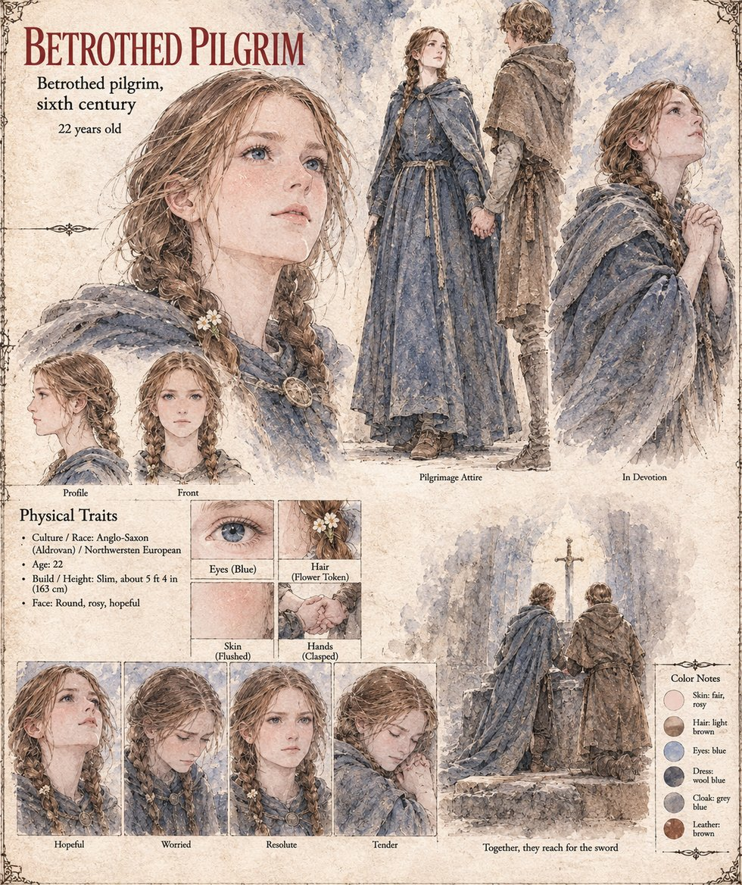

Betrothed Pilgrim (Bride-to-Be)
Betrothed pilgrim · the cathedral's sixth century · 22 years old
The other of the pair of betrothed pilgrims who try the sword together in the cathedral's sixth century, with her betrothed. They share the folk belief that a devotion pure enough, shared rather than solitary, might succeed where every solitary hand has failed. They feel nothing move beneath either palm, because wanting to prove a love is still a wanting and Valeria has never distinguished a selfish want from a beautiful one. The manuscript gives the pair no names and no lines.
The sheet gives her age as 22 and draws her slim, about 5'4", with a round, rosy, hopeful face, light-brown hair in two plaits with a pressed-flower token braided in, blue eyes and fair flushed skin, in her best blue wool dress under a grey-blue cloak, with new leather shoes saved for the pilgrimage and a pilgrim's cord at the waist; her hand is clasped in his. Its expressions are hopeful, worried, resolute and tender, and its panels include her in devotion and the two of them reaching for the sword. Sex, age and looks are the sheet's.